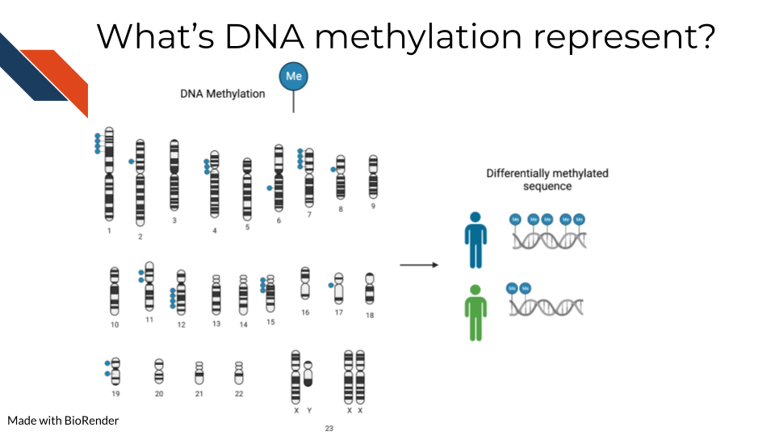
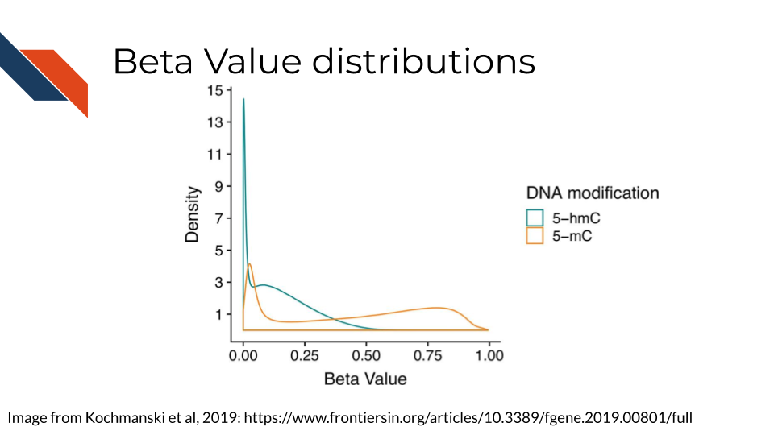
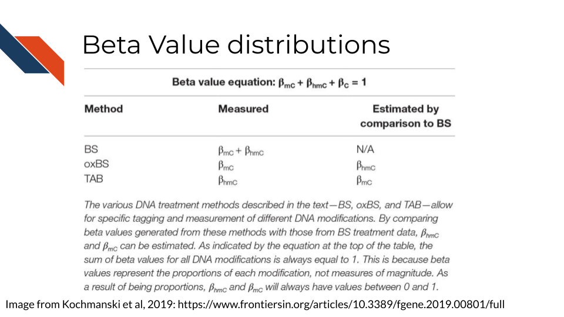

<!DOCTYPE html>
<html lang="" xml:lang="">
<head>

  <meta charset="utf-8" />
  <meta http-equiv="X-UA-Compatible" content="IE=edge" />
  <title>Chapter 20 DNA Methylation Sequencing | Choosing Genomics Tools</title>
  <meta name="description" content="Description about Course/Book." />
  <meta name="generator" content="bookdown 0.24 and GitBook 2.6.7" />

  <meta property="og:title" content="Chapter 20 DNA Methylation Sequencing | Choosing Genomics Tools" />
  <meta property="og:type" content="book" />
  
  
  <meta property="og:description" content="Description about Course/Book." />
  

  <meta name="twitter:card" content="summary" />
  <meta name="twitter:title" content="Chapter 20 DNA Methylation Sequencing | Choosing Genomics Tools" />
  
  <meta name="twitter:description" content="Description about Course/Book." />
  


  <meta name="viewport" content="width=device-width, initial-scale=1" />
  <meta name="apple-mobile-web-app-capable" content="yes" />
  <meta name="apple-mobile-web-app-status-bar-style" content="black" />
  
  <link rel="shortcut icon" href="assets/ITN_favicon.ico" type="image/x-icon" />
<link rel="prev" href="cutrun-and-cuttag.html"/>
<link rel="next" href="itcr--omic-tool-glossary.html"/>
<script src="libs/header-attrs-2.10/header-attrs.js"></script>
<script src="libs/jquery-3.6.0/jquery-3.6.0.min.js"></script>
<script src="https://cdn.jsdelivr.net/npm/fuse.js@6.4.6/dist/fuse.min.js"></script>
<link href="libs/gitbook-2.6.7/css/style.css" rel="stylesheet" />
<link href="libs/gitbook-2.6.7/css/plugin-table.css" rel="stylesheet" />
<link href="libs/gitbook-2.6.7/css/plugin-bookdown.css" rel="stylesheet" />
<link href="libs/gitbook-2.6.7/css/plugin-highlight.css" rel="stylesheet" />
<link href="libs/gitbook-2.6.7/css/plugin-search.css" rel="stylesheet" />
<link href="libs/gitbook-2.6.7/css/plugin-fontsettings.css" rel="stylesheet" />
<link href="libs/gitbook-2.6.7/css/plugin-clipboard.css" rel="stylesheet" />


<link href="libs/anchor-sections-1.0.1/anchor-sections.css" rel="stylesheet" />
<script src="libs/anchor-sections-1.0.1/anchor-sections.js"></script>
  <html>
  
  <head>
  <title>Chapter 20 DNA Methylation Sequencing | Title</title>
  </head>
  
  <body>
  
  <!-- Global site tag (gtag.js) - Google Analytics -->
  <script async src="https://www.googletagmanager.com/gtag/js?id=G-QWJXTLJBQ7"></script>
  <script>
    window.dataLayer = window.dataLayer || [];
    function gtag(){dataLayer.push(arguments);}
    gtag('js', new Date());
    
    gtag('config', 'G-QWJXTLJBQ7');
  </script>
      
  </body>
  </html>


<style type="text/css">
/* Used with Pandoc 2.11+ new --citeproc when CSL is used */
div.csl-bib-body { }
div.csl-entry {
  clear: both;
}
.hanging div.csl-entry {
  margin-left:2em;
  text-indent:-2em;
}
div.csl-left-margin {
  min-width:2em;
  float:left;
}
div.csl-right-inline {
  margin-left:2em;
  padding-left:1em;
}
div.csl-indent {
  margin-left: 2em;
}
</style>

<link rel="stylesheet" href="assets/style_ITN.css" type="text/css" />
</head>

<body>


  <div class="book without-animation with-summary font-size-2 font-family-1" data-basepath=".">

    <div class="book-summary">
      <nav role="navigation">

<ul class="summary">
<a href="https://www.itcrtraining.org/">

<li class="divider"></li>
<li class="chapter" data-level="" data-path="index.html"><a href="index.html"><i class="fa fa-check"></i>About this Course</a>
<ul>
<li class="chapter" data-level="0.1" data-path="index.html"><a href="index.html#available-course-formats"><i class="fa fa-check"></i><b>0.1</b> Available course formats</a></li>
</ul></li>
<li class="chapter" data-level="1" data-path="introduction.html"><a href="introduction.html"><i class="fa fa-check"></i><b>1</b> Introduction</a>
<ul>
<li class="chapter" data-level="1.1" data-path="introduction.html"><a href="introduction.html#target-audience"><i class="fa fa-check"></i><b>1.1</b> Target Audience</a></li>
<li class="chapter" data-level="1.2" data-path="introduction.html"><a href="introduction.html#topics-covered"><i class="fa fa-check"></i><b>1.2</b> Topics covered:</a></li>
<li class="chapter" data-level="1.3" data-path="introduction.html"><a href="introduction.html#motivation"><i class="fa fa-check"></i><b>1.3</b> Motivation</a></li>
<li class="chapter" data-level="1.4" data-path="introduction.html"><a href="introduction.html#curriculum"><i class="fa fa-check"></i><b>1.4</b> Curriculum</a></li>
<li class="chapter" data-level="1.5" data-path="introduction.html"><a href="introduction.html#how-to-use-the-course"><i class="fa fa-check"></i><b>1.5</b> How to use the course</a></li>
</ul></li>
<li class="chapter" data-level="2" data-path="a-very-general-genomics-overview.html"><a href="a-very-general-genomics-overview.html"><i class="fa fa-check"></i><b>2</b> A Very General Genomics Overview</a>
<ul>
<li class="chapter" data-level="2.1" data-path="a-very-general-genomics-overview.html"><a href="a-very-general-genomics-overview.html#learning-objectives"><i class="fa fa-check"></i><b>2.1</b> Learning Objectives</a>
<ul>
<li class="chapter" data-level="2.1.1" data-path="a-very-general-genomics-overview.html"><a href="a-very-general-genomics-overview.html#what-do-genomics-workflows-look-like"><i class="fa fa-check"></i><b>2.1.1</b> What do genomics workflows look like?</a></li>
<li class="chapter" data-level="2.1.2" data-path="a-very-general-genomics-overview.html"><a href="a-very-general-genomics-overview.html#basic-file-formats"><i class="fa fa-check"></i><b>2.1.2</b> Basic file formats</a></li>
<li class="chapter" data-level="2.1.3" data-path="a-very-general-genomics-overview.html"><a href="a-very-general-genomics-overview.html#sequencing-file-formats"><i class="fa fa-check"></i><b>2.1.3</b> Sequencing file formats</a></li>
<li class="chapter" data-level="2.1.4" data-path="a-very-general-genomics-overview.html"><a href="a-very-general-genomics-overview.html#microarray-file-formats"><i class="fa fa-check"></i><b>2.1.4</b> Microarray file formats</a></li>
</ul></li>
<li class="chapter" data-level="2.2" data-path="a-very-general-genomics-overview.html"><a href="a-very-general-genomics-overview.html#general-informatics-files"><i class="fa fa-check"></i><b>2.2</b> General informatics files</a>
<ul>
<li class="chapter" data-level="2.2.1" data-path="a-very-general-genomics-overview.html"><a href="a-very-general-genomics-overview.html#other-files"><i class="fa fa-check"></i><b>2.2.1</b> Other files</a></li>
</ul></li>
</ul></li>
<li class="chapter" data-level="3" data-path="guidelines-for-good-metadata.html"><a href="guidelines-for-good-metadata.html"><i class="fa fa-check"></i><b>3</b> Guidelines for Good Metadata</a>
<ul>
<li class="chapter" data-level="3.1" data-path="guidelines-for-good-metadata.html"><a href="guidelines-for-good-metadata.html#learning-objectives-1"><i class="fa fa-check"></i><b>3.1</b> Learning Objectives</a></li>
<li class="chapter" data-level="3.2" data-path="guidelines-for-good-metadata.html"><a href="guidelines-for-good-metadata.html#what-are-metadata"><i class="fa fa-check"></i><b>3.2</b> What are metadata?</a></li>
<li class="chapter" data-level="3.3" data-path="guidelines-for-good-metadata.html"><a href="guidelines-for-good-metadata.html#how-to-create-metadata"><i class="fa fa-check"></i><b>3.3</b> How to create metadata?</a>
<ul>
<li class="chapter" data-level="3.3.1" data-path="guidelines-for-good-metadata.html"><a href="guidelines-for-good-metadata.html#the-goals-in-creating-your-metadata"><i class="fa fa-check"></i><b>3.3.1</b> The goals in creating your metadata:</a></li>
<li class="chapter" data-level="3.3.2" data-path="guidelines-for-good-metadata.html"><a href="guidelines-for-good-metadata.html#to-recap"><i class="fa fa-check"></i><b>3.3.2</b> To recap:</a></li>
</ul></li>
</ul></li>
<li class="chapter" data-level="4" data-path="considerations-for-choosing-tools.html"><a href="considerations-for-choosing-tools.html"><i class="fa fa-check"></i><b>4</b> Considerations for choosing tools</a>
<ul>
<li class="chapter" data-level="4.1" data-path="considerations-for-choosing-tools.html"><a href="considerations-for-choosing-tools.html#learning-objectives-2"><i class="fa fa-check"></i><b>4.1</b> Learning Objectives</a></li>
<li class="chapter" data-level="4.2" data-path="considerations-for-choosing-tools.html"><a href="considerations-for-choosing-tools.html#overview"><i class="fa fa-check"></i><b>4.2</b> Overview</a>
<ul>
<li class="chapter" data-level="4.2.1" data-path="considerations-for-choosing-tools.html"><a href="considerations-for-choosing-tools.html#is-this-tool-appropriate-for-your-data-type"><i class="fa fa-check"></i><b>4.2.1</b> Is this tool appropriate for your data type?</a></li>
<li class="chapter" data-level="4.2.2" data-path="considerations-for-choosing-tools.html"><a href="considerations-for-choosing-tools.html#is-this-tool-appropriate-for-your-scientific-question"><i class="fa fa-check"></i><b>4.2.2</b> Is this tool appropriate for your scientific question?</a></li>
<li class="chapter" data-level="4.2.3" data-path="considerations-for-choosing-tools.html"><a href="considerations-for-choosing-tools.html#is-this-tool-in-an-interface-or-programming-language-you-feel-comfortable-with"><i class="fa fa-check"></i><b>4.2.3</b> Is this tool in an interface or programming language you feel comfortable with?</a></li>
<li class="chapter" data-level="4.2.4" data-path="considerations-for-choosing-tools.html"><a href="considerations-for-choosing-tools.html#how-much-computing-power-do-you-have"><i class="fa fa-check"></i><b>4.2.4</b> How much computing power do you have?</a></li>
<li class="chapter" data-level="4.2.5" data-path="considerations-for-choosing-tools.html"><a href="considerations-for-choosing-tools.html#are-there-benchmarking-papers-that-compare-this-tool-to-other-options"><i class="fa fa-check"></i><b>4.2.5</b> Are there benchmarking papers that compare this tool to other options?</a></li>
<li class="chapter" data-level="4.2.6" data-path="considerations-for-choosing-tools.html"><a href="considerations-for-choosing-tools.html#is-the-tool-well-documented-and-usable"><i class="fa fa-check"></i><b>4.2.6</b> Is the tool well documented and usable?</a></li>
<li class="chapter" data-level="4.2.7" data-path="considerations-for-choosing-tools.html"><a href="considerations-for-choosing-tools.html#is-the-tool-well-maintained"><i class="fa fa-check"></i><b>4.2.7</b> Is the tool well maintained?</a></li>
<li class="chapter" data-level="4.2.8" data-path="considerations-for-choosing-tools.html"><a href="considerations-for-choosing-tools.html#is-the-tool-generally-accepted-by-the-field"><i class="fa fa-check"></i><b>4.2.8</b> Is the tool generally accepted by the field?</a></li>
</ul></li>
<li class="chapter" data-level="4.3" data-path="considerations-for-choosing-tools.html"><a href="considerations-for-choosing-tools.html#coming-to-a-decision"><i class="fa fa-check"></i><b>4.3</b> Coming to a decision</a></li>
<li class="chapter" data-level="4.4" data-path="considerations-for-choosing-tools.html"><a href="considerations-for-choosing-tools.html#more-resources"><i class="fa fa-check"></i><b>4.4</b> More resources</a></li>
</ul></li>
<li class="chapter" data-level="5" data-path="general-data-analysis-tools.html"><a href="general-data-analysis-tools.html"><i class="fa fa-check"></i><b>5</b> General Data Analysis Tools</a>
<ul>
<li class="chapter" data-level="5.1" data-path="general-data-analysis-tools.html"><a href="general-data-analysis-tools.html#learning-objectives-3"><i class="fa fa-check"></i><b>5.1</b> Learning Objectives</a></li>
<li class="chapter" data-level="5.2" data-path="general-data-analysis-tools.html"><a href="general-data-analysis-tools.html#command-line-vs-gui"><i class="fa fa-check"></i><b>5.2</b> Command Line vs GUI</a>
<ul>
<li class="chapter" data-level="5.2.1" data-path="general-data-analysis-tools.html"><a href="general-data-analysis-tools.html#bash"><i class="fa fa-check"></i><b>5.2.1</b> Bash</a></li>
<li class="chapter" data-level="5.2.2" data-path="general-data-analysis-tools.html"><a href="general-data-analysis-tools.html#r"><i class="fa fa-check"></i><b>5.2.2</b> R</a></li>
<li class="chapter" data-level="5.2.3" data-path="general-data-analysis-tools.html"><a href="general-data-analysis-tools.html#python"><i class="fa fa-check"></i><b>5.2.3</b> Python</a></li>
</ul></li>
<li class="chapter" data-level="5.3" data-path="general-data-analysis-tools.html"><a href="general-data-analysis-tools.html#more-resources-1"><i class="fa fa-check"></i><b>5.3</b> More resources</a></li>
</ul></li>
<li class="chapter" data-level="6" data-path="sequencing-data.html"><a href="sequencing-data.html"><i class="fa fa-check"></i><b>6</b> Sequencing Data</a>
<ul>
<li class="chapter" data-level="6.1" data-path="sequencing-data.html"><a href="sequencing-data.html#learning-objectives-4"><i class="fa fa-check"></i><b>6.1</b> Learning Objectives</a></li>
<li class="chapter" data-level="6.2" data-path="sequencing-data.html"><a href="sequencing-data.html#how-does-sequencing-work"><i class="fa fa-check"></i><b>6.2</b> How does sequencing work?</a></li>
<li class="chapter" data-level="6.3" data-path="sequencing-data.html"><a href="sequencing-data.html#sequencing-concepts"><i class="fa fa-check"></i><b>6.3</b> Sequencing concepts</a>
<ul>
<li class="chapter" data-level="6.3.1" data-path="sequencing-data.html"><a href="sequencing-data.html#inherent-biases"><i class="fa fa-check"></i><b>6.3.1</b> Inherent biases</a></li>
<li class="chapter" data-level="6.3.2" data-path="sequencing-data.html"><a href="sequencing-data.html#pcr-amplification"><i class="fa fa-check"></i><b>6.3.2</b> PCR Amplification</a></li>
<li class="chapter" data-level="6.3.3" data-path="sequencing-data.html"><a href="sequencing-data.html#depth-of-coverage"><i class="fa fa-check"></i><b>6.3.3</b> Depth of coverage</a></li>
<li class="chapter" data-level="6.3.4" data-path="sequencing-data.html"><a href="sequencing-data.html#quality-controls"><i class="fa fa-check"></i><b>6.3.4</b> Quality controls</a></li>
<li class="chapter" data-level="6.3.5" data-path="sequencing-data.html"><a href="sequencing-data.html#alignment"><i class="fa fa-check"></i><b>6.3.5</b> Alignment</a></li>
<li class="chapter" data-level="6.3.6" data-path="sequencing-data.html"><a href="sequencing-data.html#single-end-vs-paired-end"><i class="fa fa-check"></i><b>6.3.6</b> Single End vs Paired End</a></li>
</ul></li>
<li class="chapter" data-level="6.4" data-path="sequencing-data.html"><a href="sequencing-data.html#very-general-sequencing-workflow"><i class="fa fa-check"></i><b>6.4</b> Very General Sequencing Workflow</a>
<ul>
<li class="chapter" data-level="6.4.1" data-path="sequencing-data.html"><a href="sequencing-data.html#sequencing-file-formats-1"><i class="fa fa-check"></i><b>6.4.1</b> Sequencing file formats</a></li>
<li class="chapter" data-level="6.4.2" data-path="sequencing-data.html"><a href="sequencing-data.html#other-files-1"><i class="fa fa-check"></i><b>6.4.2</b> Other files</a></li>
</ul></li>
</ul></li>
<li class="chapter" data-level="7" data-path="microarray-data.html"><a href="microarray-data.html"><i class="fa fa-check"></i><b>7</b> Microarray Data</a>
<ul>
<li class="chapter" data-level="7.1" data-path="microarray-data.html"><a href="microarray-data.html#learning-objectives-5"><i class="fa fa-check"></i><b>7.1</b> Learning Objectives</a></li>
<li class="chapter" data-level="7.2" data-path="microarray-data.html"><a href="microarray-data.html#summary-of-microarrays"><i class="fa fa-check"></i><b>7.2</b> Summary of microarrays</a></li>
<li class="chapter" data-level="7.3" data-path="microarray-data.html"><a href="microarray-data.html#how-do-microarrays-work"><i class="fa fa-check"></i><b>7.3</b> How do microarrays work?</a>
<ul>
<li class="chapter" data-level="7.3.1" data-path="microarray-data.html"><a href="microarray-data.html#pros"><i class="fa fa-check"></i><b>7.3.1</b> Pros:</a></li>
<li class="chapter" data-level="7.3.2" data-path="microarray-data.html"><a href="microarray-data.html#cons"><i class="fa fa-check"></i><b>7.3.2</b> Cons:</a></li>
</ul></li>
<li class="chapter" data-level="7.4" data-path="microarray-data.html"><a href="microarray-data.html#what-types-of-arrays-are-there"><i class="fa fa-check"></i><b>7.4</b> What types of arrays are there?</a>
<ul>
<li class="chapter" data-level="7.4.1" data-path="microarray-data.html"><a href="microarray-data.html#snp-arrays"><i class="fa fa-check"></i><b>7.4.1</b> SNP arrays</a></li>
<li class="chapter" data-level="7.4.2" data-path="microarray-data.html"><a href="microarray-data.html#gene-expression-arrays"><i class="fa fa-check"></i><b>7.4.2</b> Gene expression arrays</a></li>
<li class="chapter" data-level="7.4.3" data-path="microarray-data.html"><a href="microarray-data.html#dna-methylation-arrays"><i class="fa fa-check"></i><b>7.4.3</b> DNA methylation arrays</a></li>
</ul></li>
<li class="chapter" data-level="7.5" data-path="microarray-data.html"><a href="microarray-data.html#general-processing-of-microarray-data"><i class="fa fa-check"></i><b>7.5</b> General processing of microarray data</a>
<ul>
<li class="chapter" data-level="7.5.1" data-path="microarray-data.html"><a href="microarray-data.html#examples-2"><i class="fa fa-check"></i><b>7.5.1</b> Examples</a></li>
<li class="chapter" data-level="7.5.2" data-path="microarray-data.html"><a href="microarray-data.html#microarray-platforms"><i class="fa fa-check"></i><b>7.5.2</b> Microarray Platforms</a></li>
</ul></li>
<li class="chapter" data-level="7.6" data-path="microarray-data.html"><a href="microarray-data.html#very-general-microarray-workflow"><i class="fa fa-check"></i><b>7.6</b> Very General Microarray Workflow</a>
<ul>
<li class="chapter" data-level="7.6.1" data-path="microarray-data.html"><a href="microarray-data.html#microarray-file-formats-1"><i class="fa fa-check"></i><b>7.6.1</b> Microarray file formats</a></li>
</ul></li>
<li class="chapter" data-level="7.7" data-path="microarray-data.html"><a href="microarray-data.html#general-informatics-files-1"><i class="fa fa-check"></i><b>7.7</b> General informatics files</a>
<ul>
<li class="chapter" data-level="7.7.1" data-path="microarray-data.html"><a href="microarray-data.html#other-files-2"><i class="fa fa-check"></i><b>7.7.1</b> Other files</a></li>
<li class="chapter" data-level="7.7.2" data-path="microarray-data.html"><a href="microarray-data.html#microarray-processing-tutorials"><i class="fa fa-check"></i><b>7.7.2</b> Microarray processing tutorials:</a></li>
</ul></li>
</ul></li>
<li class="chapter" data-level="8" data-path="annotating-genomes.html"><a href="annotating-genomes.html"><i class="fa fa-check"></i><b>8</b> Annotating Genomes</a>
<ul>
<li class="chapter" data-level="8.1" data-path="annotating-genomes.html"><a href="annotating-genomes.html#learning-objectives-6"><i class="fa fa-check"></i><b>8.1</b> Learning Objectives</a></li>
<li class="chapter" data-level="8.2" data-path="annotating-genomes.html"><a href="annotating-genomes.html#what-are-reference-genomes"><i class="fa fa-check"></i><b>8.2</b> What are reference genomes?</a></li>
<li class="chapter" data-level="8.3" data-path="annotating-genomes.html"><a href="annotating-genomes.html#what-are-genome-versions"><i class="fa fa-check"></i><b>8.3</b> What are genome versions?</a></li>
<li class="chapter" data-level="8.4" data-path="annotating-genomes.html"><a href="annotating-genomes.html#what-are-the-different-files"><i class="fa fa-check"></i><b>8.4</b> What are the different files?</a>
<ul>
<li class="chapter" data-level="8.4.1" data-path="annotating-genomes.html"><a href="annotating-genomes.html#how-to-download-annotation-files"><i class="fa fa-check"></i><b>8.4.1</b> How to download annotation files</a></li>
</ul></li>
<li class="chapter" data-level="8.5" data-path="annotating-genomes.html"><a href="annotating-genomes.html#considerations-for-annotating-genomic-data"><i class="fa fa-check"></i><b>8.5</b> Considerations for annotating genomic data</a>
<ul>
<li class="chapter" data-level="8.5.1" data-path="annotating-genomes.html"><a href="annotating-genomes.html#make-sure-you-have-the-right-file-to-start"><i class="fa fa-check"></i><b>8.5.1</b> Make sure you have the right file to start!</a></li>
<li class="chapter" data-level="8.5.2" data-path="annotating-genomes.html"><a href="annotating-genomes.html#be-consistent-in-your-annotations"><i class="fa fa-check"></i><b>8.5.2</b> Be consistent in your annotations</a></li>
<li class="chapter" data-level="8.5.3" data-path="annotating-genomes.html"><a href="annotating-genomes.html#be-clear-in-your-write-ups"><i class="fa fa-check"></i><b>8.5.3</b> Be clear in your write ups!</a></li>
</ul></li>
<li class="chapter" data-level="8.6" data-path="annotating-genomes.html"><a href="annotating-genomes.html#resources-you-will-need-for-annotation"><i class="fa fa-check"></i><b>8.6</b> Resources you will need for annotation!</a>
<ul>
<li class="chapter" data-level="8.6.1" data-path="annotating-genomes.html"><a href="annotating-genomes.html#annotation-databases"><i class="fa fa-check"></i><b>8.6.1</b> Annotation databases</a></li>
<li class="chapter" data-level="8.6.2" data-path="annotating-genomes.html"><a href="annotating-genomes.html#gui-based-annotation-tools"><i class="fa fa-check"></i><b>8.6.2</b> GUI based annotation tools</a></li>
<li class="chapter" data-level="8.6.3" data-path="annotating-genomes.html"><a href="annotating-genomes.html#command-line-based-tools"><i class="fa fa-check"></i><b>8.6.3</b> Command line based tools</a></li>
<li class="chapter" data-level="8.6.4" data-path="annotating-genomes.html"><a href="annotating-genomes.html#more-resources-about-genome-annotation"><i class="fa fa-check"></i><b>8.6.4</b> More resources about genome annotation</a></li>
</ul></li>
</ul></li>
<li class="part"><span><b>Specific Data Types</b></span></li>
<li class="chapter" data-level="9" data-path="dna-methods-overview.html"><a href="dna-methods-overview.html"><i class="fa fa-check"></i><b>9</b> DNA Methods Overview</a>
<ul>
<li class="chapter" data-level="9.1" data-path="dna-methods-overview.html"><a href="dna-methods-overview.html#learning-objectives-7"><i class="fa fa-check"></i><b>9.1</b> Learning Objectives</a></li>
<li class="chapter" data-level="9.2" data-path="dna-methods-overview.html"><a href="dna-methods-overview.html#what-are-the-goals-of-analyzing-dna-sequences"><i class="fa fa-check"></i><b>9.2</b> What are the goals of analyzing DNA sequences?</a></li>
<li class="chapter" data-level="9.3" data-path="dna-methods-overview.html"><a href="dna-methods-overview.html#comparison-of-dna-methods"><i class="fa fa-check"></i><b>9.3</b> Comparison of DNA methods</a></li>
<li class="chapter" data-level="9.4" data-path="dna-methods-overview.html"><a href="dna-methods-overview.html#how-to-choose-a-dna-sequencing-method"><i class="fa fa-check"></i><b>9.4</b> How to choose a DNA sequencing method</a>
<ul>
<li class="chapter" data-level="9.4.1" data-path="dna-methods-overview.html"><a href="dna-methods-overview.html#what-regions-of-the-genome-pertain-to-your-research-question"><i class="fa fa-check"></i><b>9.4.1</b> 1. What region(s) of the genome pertain to your research question?</a></li>
<li class="chapter" data-level="9.4.2" data-path="dna-methods-overview.html"><a href="dna-methods-overview.html#what-does-your-project-budget-allow-for"><i class="fa fa-check"></i><b>9.4.2</b> 2. What does your project budget allow for?</a></li>
<li class="chapter" data-level="9.4.3" data-path="dna-methods-overview.html"><a href="dna-methods-overview.html#what-is-your-detection-power-for-these-variants"><i class="fa fa-check"></i><b>9.4.3</b> 3. What is your detection power for these variants?</a></li>
</ul></li>
<li class="chapter" data-level="9.5" data-path="dna-methods-overview.html"><a href="dna-methods-overview.html#strengths-and-weaknesses-of-different-methods"><i class="fa fa-check"></i><b>9.5</b> Strengths and Weaknesses of different methods</a></li>
</ul></li>
<li class="chapter" data-level="10" data-path="whole-genome-or-exome-sequencing.html"><a href="whole-genome-or-exome-sequencing.html"><i class="fa fa-check"></i><b>10</b> Whole Genome or Exome Sequencing</a>
<ul>
<li class="chapter" data-level="10.1" data-path="whole-genome-or-exome-sequencing.html"><a href="whole-genome-or-exome-sequencing.html#learning-objectives-8"><i class="fa fa-check"></i><b>10.1</b> Learning Objectives</a></li>
<li class="chapter" data-level="10.2" data-path="whole-genome-or-exome-sequencing.html"><a href="whole-genome-or-exome-sequencing.html#wgs-and-wgs-overview"><i class="fa fa-check"></i><b>10.2</b> WGS and WGS Overview</a></li>
<li class="chapter" data-level="10.3" data-path="whole-genome-or-exome-sequencing.html"><a href="whole-genome-or-exome-sequencing.html#advantages-and-disadvantages-of-wgs-vs-wxs"><i class="fa fa-check"></i><b>10.3</b> Advantages and Disadvantages of WGS vs WXS</a></li>
<li class="chapter" data-level="10.4" data-path="whole-genome-or-exome-sequencing.html"><a href="whole-genome-or-exome-sequencing.html#wgswxs-considerations"><i class="fa fa-check"></i><b>10.4</b> WGS/WXS Considerations</a>
<ul>
<li class="chapter" data-level="10.4.1" data-path="whole-genome-or-exome-sequencing.html"><a href="whole-genome-or-exome-sequencing.html#target-enrichment-techniques"><i class="fa fa-check"></i><b>10.4.1</b> Target enrichment techniques</a></li>
</ul></li>
<li class="chapter" data-level="10.5" data-path="whole-genome-or-exome-sequencing.html"><a href="whole-genome-or-exome-sequencing.html#dna-sequencing-pipeline-overview"><i class="fa fa-check"></i><b>10.5</b> DNA Sequencing Pipeline Overview</a></li>
<li class="chapter" data-level="10.6" data-path="whole-genome-or-exome-sequencing.html"><a href="whole-genome-or-exome-sequencing.html#data-pre-processing"><i class="fa fa-check"></i><b>10.6</b> Data Pre-processing</a></li>
<li class="chapter" data-level="10.7" data-path="whole-genome-or-exome-sequencing.html"><a href="whole-genome-or-exome-sequencing.html#commonly-used-tools"><i class="fa fa-check"></i><b>10.7</b> Commonly Used Tools</a></li>
<li class="chapter" data-level="10.8" data-path="whole-genome-or-exome-sequencing.html"><a href="whole-genome-or-exome-sequencing.html#data-pre-processing-tools"><i class="fa fa-check"></i><b>10.8</b> Data pre-processing tools</a></li>
<li class="chapter" data-level="10.9" data-path="whole-genome-or-exome-sequencing.html"><a href="whole-genome-or-exome-sequencing.html#tools-for-somatic-and-germline-variant-identification"><i class="fa fa-check"></i><b>10.9</b> Tools for somatic and germline variant identification</a></li>
<li class="chapter" data-level="10.10" data-path="whole-genome-or-exome-sequencing.html"><a href="whole-genome-or-exome-sequencing.html#tools-for-variant-calling-annotation"><i class="fa fa-check"></i><b>10.10</b> Tools for variant calling annotation</a></li>
<li class="chapter" data-level="10.11" data-path="whole-genome-or-exome-sequencing.html"><a href="whole-genome-or-exome-sequencing.html#tools-for-copy-number-variation-analysis"><i class="fa fa-check"></i><b>10.11</b> Tools for copy number variation analysis</a></li>
<li class="chapter" data-level="10.12" data-path="whole-genome-or-exome-sequencing.html"><a href="whole-genome-or-exome-sequencing.html#tools-for-data-visualization"><i class="fa fa-check"></i><b>10.12</b> Tools for data visualization</a></li>
<li class="chapter" data-level="10.13" data-path="whole-genome-or-exome-sequencing.html"><a href="whole-genome-or-exome-sequencing.html#resources-for-wgs"><i class="fa fa-check"></i><b>10.13</b> Resources for WGS</a></li>
</ul></li>
<li class="chapter" data-level="11" data-path="rna-methods-overview.html"><a href="rna-methods-overview.html"><i class="fa fa-check"></i><b>11</b> RNA Methods Overview</a>
<ul>
<li class="chapter" data-level="11.1" data-path="rna-methods-overview.html"><a href="rna-methods-overview.html#learning-objectives-9"><i class="fa fa-check"></i><b>11.1</b> Learning Objectives</a></li>
<li class="chapter" data-level="11.2" data-path="rna-methods-overview.html"><a href="rna-methods-overview.html#what-are-the-goals-of-gene-expression-analysis"><i class="fa fa-check"></i><b>11.2</b> What are the goals of gene expression analysis?</a></li>
<li class="chapter" data-level="11.3" data-path="rna-methods-overview.html"><a href="rna-methods-overview.html#comparison-of-rna-methods"><i class="fa fa-check"></i><b>11.3</b> Comparison of RNA methods</a>
<ul>
<li class="chapter" data-level="11.3.1" data-path="rna-methods-overview.html"><a href="rna-methods-overview.html#single-cell-rna-seq-scrna-seq"><i class="fa fa-check"></i><b>11.3.1</b> Single-cell RNA-seq (scRNA-seq):</a></li>
<li class="chapter" data-level="11.3.2" data-path="rna-methods-overview.html"><a href="rna-methods-overview.html#bulk-rna-seq"><i class="fa fa-check"></i><b>11.3.2</b> Bulk RNA-seq:</a></li>
<li class="chapter" data-level="11.3.3" data-path="rna-methods-overview.html"><a href="rna-methods-overview.html#gene-expression-microarray"><i class="fa fa-check"></i><b>11.3.3</b> Gene Expression Microarray:</a></li>
<li class="chapter" data-level="11.3.4" data-path="rna-methods-overview.html"><a href="rna-methods-overview.html#spatial-transcriptomics"><i class="fa fa-check"></i><b>11.3.4</b> Spatial Transcriptomics:</a></li>
</ul></li>
</ul></li>
<li class="chapter" data-level="12" data-path="bulk-rna-seq-1.html"><a href="bulk-rna-seq-1.html"><i class="fa fa-check"></i><b>12</b> Bulk RNA-seq</a>
<ul>
<li class="chapter" data-level="12.1" data-path="bulk-rna-seq-1.html"><a href="bulk-rna-seq-1.html#learning-objectives-10"><i class="fa fa-check"></i><b>12.1</b> Learning Objectives</a></li>
<li class="chapter" data-level="12.2" data-path="bulk-rna-seq-1.html"><a href="bulk-rna-seq-1.html#where-rna-seq-data-comes-from"><i class="fa fa-check"></i><b>12.2</b> Where RNA-seq data comes from</a></li>
<li class="chapter" data-level="12.3" data-path="bulk-rna-seq-1.html"><a href="bulk-rna-seq-1.html#rna-seq-workflow"><i class="fa fa-check"></i><b>12.3</b> RNA-seq workflow</a></li>
<li class="chapter" data-level="12.4" data-path="bulk-rna-seq-1.html"><a href="bulk-rna-seq-1.html#rna-seq-data-strengths"><i class="fa fa-check"></i><b>12.4</b> RNA-seq data <strong>strengths</strong></a></li>
<li class="chapter" data-level="12.5" data-path="bulk-rna-seq-1.html"><a href="bulk-rna-seq-1.html#rna-seq-data-limitations"><i class="fa fa-check"></i><b>12.5</b> RNA-seq data <strong>limitations</strong></a></li>
<li class="chapter" data-level="12.6" data-path="bulk-rna-seq-1.html"><a href="bulk-rna-seq-1.html#rna-seq-data-considerations"><i class="fa fa-check"></i><b>12.6</b> RNA-seq data considerations</a>
<ul>
<li class="chapter" data-level="12.6.1" data-path="bulk-rna-seq-1.html"><a href="bulk-rna-seq-1.html#ribo-minus-vs-poly-a-selection"><i class="fa fa-check"></i><b>12.6.1</b> Ribo minus vs poly A selection</a></li>
<li class="chapter" data-level="12.6.2" data-path="bulk-rna-seq-1.html"><a href="bulk-rna-seq-1.html#transcriptome-mapping"><i class="fa fa-check"></i><b>12.6.2</b> Transcriptome mapping</a></li>
<li class="chapter" data-level="12.6.3" data-path="bulk-rna-seq-1.html"><a href="bulk-rna-seq-1.html#abundance-measures"><i class="fa fa-check"></i><b>12.6.3</b> Abundance measures</a></li>
<li class="chapter" data-level="12.6.4" data-path="bulk-rna-seq-1.html"><a href="bulk-rna-seq-1.html#rna-seq-downstream-analysis-tools"><i class="fa fa-check"></i><b>12.6.4</b> RNA-seq downstream analysis tools</a></li>
</ul></li>
<li class="chapter" data-level="12.7" data-path="bulk-rna-seq-1.html"><a href="bulk-rna-seq-1.html#visualization-gui-tools"><i class="fa fa-check"></i><b>12.7</b> Visualization GUI tools</a></li>
<li class="chapter" data-level="12.8" data-path="bulk-rna-seq-1.html"><a href="bulk-rna-seq-1.html#rna-seq-data-resources"><i class="fa fa-check"></i><b>12.8</b> RNA-seq data resources</a></li>
<li class="chapter" data-level="12.9" data-path="bulk-rna-seq-1.html"><a href="bulk-rna-seq-1.html#more-reading-about-rna-seq-data"><i class="fa fa-check"></i><b>12.9</b> More reading about RNA-seq data</a></li>
</ul></li>
<li class="chapter" data-level="13" data-path="single-cell-rna-seq.html"><a href="single-cell-rna-seq.html"><i class="fa fa-check"></i><b>13</b> Single-cell RNA-seq</a>
<ul>
<li class="chapter" data-level="13.1" data-path="single-cell-rna-seq.html"><a href="single-cell-rna-seq.html#learning-objectives-11"><i class="fa fa-check"></i><b>13.1</b> Learning Objectives</a></li>
<li class="chapter" data-level="13.2" data-path="single-cell-rna-seq.html"><a href="single-cell-rna-seq.html#where-single-cell-rna-seq-data-comes-from"><i class="fa fa-check"></i><b>13.2</b> Where single-cell RNA-seq data comes from</a></li>
<li class="chapter" data-level="13.3" data-path="single-cell-rna-seq.html"><a href="single-cell-rna-seq.html#single-cell-rna-seq-data-types"><i class="fa fa-check"></i><b>13.3</b> Single-cell RNA-seq data types</a>
<ul>
<li class="chapter" data-level="13.3.1" data-path="single-cell-rna-seq.html"><a href="single-cell-rna-seq.html#unique-molecular-identifiers"><i class="fa fa-check"></i><b>13.3.1</b> Unique Molecular identifiers</a></li>
</ul></li>
<li class="chapter" data-level="13.4" data-path="single-cell-rna-seq.html"><a href="single-cell-rna-seq.html#single-cell-rna-seq-tools"><i class="fa fa-check"></i><b>13.4</b> Single cell RNA-seq tools</a></li>
<li class="chapter" data-level="13.5" data-path="single-cell-rna-seq.html"><a href="single-cell-rna-seq.html#quantification-and-alignment-tools"><i class="fa fa-check"></i><b>13.5</b> Quantification and alignment tools</a></li>
<li class="chapter" data-level="13.6" data-path="single-cell-rna-seq.html"><a href="single-cell-rna-seq.html#downstream-tools-pros-and-cons"><i class="fa fa-check"></i><b>13.6</b> Downstream tools Pros and Cons</a>
<ul>
<li class="chapter" data-level="13.6.1" data-path="single-cell-rna-seq.html"><a href="single-cell-rna-seq.html#doublet-tool-pros-and-cons"><i class="fa fa-check"></i><b>13.6.1</b> Doublet Tool Pros and Cons</a></li>
</ul></li>
<li class="chapter" data-level="13.7" data-path="single-cell-rna-seq.html"><a href="single-cell-rna-seq.html#more-scrna-seq-tools-and-tutorials"><i class="fa fa-check"></i><b>13.7</b> More scRNA-seq tools and tutorials</a></li>
<li class="chapter" data-level="13.8" data-path="single-cell-rna-seq.html"><a href="single-cell-rna-seq.html#visualization-gui-tools-1"><i class="fa fa-check"></i><b>13.8</b> Visualization GUI tools</a></li>
<li class="chapter" data-level="13.9" data-path="single-cell-rna-seq.html"><a href="single-cell-rna-seq.html#useful-tutorials"><i class="fa fa-check"></i><b>13.9</b> Useful tutorials</a></li>
<li class="chapter" data-level="13.10" data-path="single-cell-rna-seq.html"><a href="single-cell-rna-seq.html#useful-readings"><i class="fa fa-check"></i><b>13.10</b> Useful readings</a></li>
</ul></li>
<li class="chapter" data-level="14" data-path="spatial-transcriptomics-1.html"><a href="spatial-transcriptomics-1.html"><i class="fa fa-check"></i><b>14</b> Spatial transcriptomics</a>
<ul>
<li class="chapter" data-level="14.1" data-path="spatial-transcriptomics-1.html"><a href="spatial-transcriptomics-1.html#learning-objectives-12"><i class="fa fa-check"></i><b>14.1</b> Learning objectives</a></li>
<li class="chapter" data-level="14.2" data-path="spatial-transcriptomics-1.html"><a href="spatial-transcriptomics-1.html#what-are-the-goals-of-spatial-transcriptomic-analysis"><i class="fa fa-check"></i><b>14.2</b> What are the goals of spatial transcriptomic analysis?</a></li>
<li class="chapter" data-level="14.3" data-path="spatial-transcriptomics-1.html"><a href="spatial-transcriptomics-1.html#overview-of-a-spatial-transcriptomics-workflow"><i class="fa fa-check"></i><b>14.3</b> Overview of a spatial transcriptomics workflow</a></li>
<li class="chapter" data-level="14.4" data-path="spatial-transcriptomics-1.html"><a href="spatial-transcriptomics-1.html#spatial-transcriptomic-data-strengths"><i class="fa fa-check"></i><b>14.4</b> Spatial transcriptomic data <strong>strengths</strong>:</a></li>
<li class="chapter" data-level="14.5" data-path="spatial-transcriptomics-1.html"><a href="spatial-transcriptomics-1.html#spatial-transcriptomic-data-weaknesses"><i class="fa fa-check"></i><b>14.5</b> Spatial transcriptomic data <strong>weaknesses</strong>:</a></li>
<li class="chapter" data-level="14.6" data-path="spatial-transcriptomics-1.html"><a href="spatial-transcriptomics-1.html#tools-for-spatial-transcriptomics"><i class="fa fa-check"></i><b>14.6</b> Tools for spatial transcriptomics</a>
<ul>
<li class="chapter" data-level="14.6.1" data-path="spatial-transcriptomics-1.html"><a href="spatial-transcriptomics-1.html#data-processing"><i class="fa fa-check"></i><b>14.6.1</b> Data processing:</a></li>
<li class="chapter" data-level="14.6.2" data-path="spatial-transcriptomics-1.html"><a href="spatial-transcriptomics-1.html#data-exploration"><i class="fa fa-check"></i><b>14.6.2</b> Data exploration:</a></li>
<li class="chapter" data-level="14.6.3" data-path="spatial-transcriptomics-1.html"><a href="spatial-transcriptomics-1.html#clusteringtissue-domain-identification"><i class="fa fa-check"></i><b>14.6.3</b> Clustering/tissue domain identification:</a></li>
<li class="chapter" data-level="14.6.4" data-path="spatial-transcriptomics-1.html"><a href="spatial-transcriptomics-1.html#spatially-variable-gene-identification"><i class="fa fa-check"></i><b>14.6.4</b> Spatially variable gene identification:</a></li>
<li class="chapter" data-level="14.6.5" data-path="spatial-transcriptomics-1.html"><a href="spatial-transcriptomics-1.html#deconvolutionphenotyping"><i class="fa fa-check"></i><b>14.6.5</b> Deconvolution/phenotyping:</a></li>
<li class="chapter" data-level="14.6.6" data-path="spatial-transcriptomics-1.html"><a href="spatial-transcriptomics-1.html#cell-communication"><i class="fa fa-check"></i><b>14.6.6</b> Cell communication:</a></li>
</ul></li>
<li class="chapter" data-level="14.7" data-path="spatial-transcriptomics-1.html"><a href="spatial-transcriptomics-1.html#more-tools-and-tutorials-regarding-spatial-transcriptomics"><i class="fa fa-check"></i><b>14.7</b> More tools and tutorials regarding spatial transcriptomics</a></li>
</ul></li>
<li class="chapter" data-level="15" data-path="chromatin-methods-overview.html"><a href="chromatin-methods-overview.html"><i class="fa fa-check"></i><b>15</b> Chromatin Methods Overview</a>
<ul>
<li class="chapter" data-level="15.1" data-path="chromatin-methods-overview.html"><a href="chromatin-methods-overview.html#learning-objectives-13"><i class="fa fa-check"></i><b>15.1</b> Learning Objectives</a></li>
<li class="chapter" data-level="15.2" data-path="chromatin-methods-overview.html"><a href="chromatin-methods-overview.html#why-are-people-interested-in-chromatin"><i class="fa fa-check"></i><b>15.2</b> Why are people interested in chromatin?</a></li>
<li class="chapter" data-level="15.3" data-path="chromatin-methods-overview.html"><a href="chromatin-methods-overview.html#what-kinds-of-questions-can-chromatin-answer"><i class="fa fa-check"></i><b>15.3</b> What kinds of questions can chromatin answer?</a>
<ul>
<li class="chapter" data-level="15.3.1" data-path="chromatin-methods-overview.html"><a href="chromatin-methods-overview.html#chromatin-is-involved-in-a-variety-of-biological-processes"><i class="fa fa-check"></i><b>15.3.1</b> Chromatin is involved in a variety of biological processes:</a></li>
</ul></li>
<li class="chapter" data-level="15.4" data-path="chromatin-methods-overview.html"><a href="chromatin-methods-overview.html#comparison-of-technologies"><i class="fa fa-check"></i><b>15.4</b> Comparison of technologies</a>
<ul>
<li class="chapter" data-level="15.4.1" data-path="chromatin-methods-overview.html"><a href="chromatin-methods-overview.html#atac-seq"><i class="fa fa-check"></i><b>15.4.1</b> ATAC-seq:</a></li>
<li class="chapter" data-level="15.4.2" data-path="chromatin-methods-overview.html"><a href="chromatin-methods-overview.html#single-cell-atac-seq"><i class="fa fa-check"></i><b>15.4.2</b> Single-cell ATAC-seq:</a></li>
<li class="chapter" data-level="15.4.3" data-path="chromatin-methods-overview.html"><a href="chromatin-methods-overview.html#chip-seq"><i class="fa fa-check"></i><b>15.4.3</b> ChIP-seq:</a></li>
<li class="chapter" data-level="15.4.4" data-path="chromatin-methods-overview.html"><a href="chromatin-methods-overview.html#cutrun"><i class="fa fa-check"></i><b>15.4.4</b> CUT&amp;RUN</a></li>
<li class="chapter" data-level="15.4.5" data-path="chromatin-methods-overview.html"><a href="chromatin-methods-overview.html#cuttag"><i class="fa fa-check"></i><b>15.4.5</b> CUT&amp;Tag</a></li>
<li class="chapter" data-level="15.4.6" data-path="chromatin-methods-overview.html"><a href="chromatin-methods-overview.html#gro-seq-global-run-on-sequencing"><i class="fa fa-check"></i><b>15.4.6</b> GRO-seq (Global Run-On sequencing)</a></li>
<li class="chapter" data-level="15.4.7" data-path="chromatin-methods-overview.html"><a href="chromatin-methods-overview.html#how-gro-seq-works"><i class="fa fa-check"></i><b>15.4.7</b> How GRO-seq works:</a></li>
</ul></li>
</ul></li>
<li class="chapter" data-level="16" data-path="atac-seq-1.html"><a href="atac-seq-1.html"><i class="fa fa-check"></i><b>16</b> ATAC-Seq</a>
<ul>
<li class="chapter" data-level="16.1" data-path="atac-seq-1.html"><a href="atac-seq-1.html#learning-objectives-14"><i class="fa fa-check"></i><b>16.1</b> Learning Objectives</a></li>
<li class="chapter" data-level="16.2" data-path="atac-seq-1.html"><a href="atac-seq-1.html#what-are-the-goals-of-atac-seq-analysis"><i class="fa fa-check"></i><b>16.2</b> What are the goals of ATAC-Seq analysis?</a>
<ul>
<li class="chapter" data-level="16.2.1" data-path="atac-seq-1.html"><a href="atac-seq-1.html#what-questions-can-be-answered-with-atac-seq"><i class="fa fa-check"></i><b>16.2.1</b> What questions can be answered with ATAC-seq?</a></li>
</ul></li>
<li class="chapter" data-level="16.3" data-path="atac-seq-1.html"><a href="atac-seq-1.html#atac-seq-general-workflow-overview"><i class="fa fa-check"></i><b>16.3</b> ATAC-Seq general workflow overview</a>
<ul>
<li class="chapter" data-level="16.3.1" data-path="atac-seq-1.html"><a href="atac-seq-1.html#data-quality-metrics"><i class="fa fa-check"></i><b>16.3.1</b> Data quality metrics:</a></li>
<li class="chapter" data-level="16.3.2" data-path="atac-seq-1.html"><a href="atac-seq-1.html#information-from-atac-seq-analysis"><i class="fa fa-check"></i><b>16.3.2</b> Information from ATAC-seq analysis:</a></li>
</ul></li>
<li class="chapter" data-level="16.4" data-path="atac-seq-1.html"><a href="atac-seq-1.html#atac-seq-data-strengths"><i class="fa fa-check"></i><b>16.4</b> ATAC-Seq data <strong>strengths</strong>:</a></li>
<li class="chapter" data-level="16.5" data-path="atac-seq-1.html"><a href="atac-seq-1.html#atac-seq-data-limitations"><i class="fa fa-check"></i><b>16.5</b> ATAC-Seq data <strong>limitations</strong>:</a></li>
<li class="chapter" data-level="16.6" data-path="atac-seq-1.html"><a href="atac-seq-1.html#atac-seq-data-considerations"><i class="fa fa-check"></i><b>16.6</b> ATAC-Seq data considerations</a></li>
<li class="chapter" data-level="16.7" data-path="atac-seq-1.html"><a href="atac-seq-1.html#atac-seq-analysis-tools"><i class="fa fa-check"></i><b>16.7</b> ATAC-seq analysis tools</a></li>
<li class="chapter" data-level="16.8" data-path="atac-seq-1.html"><a href="atac-seq-1.html#additional-tutorials-and-tools"><i class="fa fa-check"></i><b>16.8</b> Additional tutorials and tools</a></li>
<li class="chapter" data-level="16.9" data-path="atac-seq-1.html"><a href="atac-seq-1.html#additional-tutorials-and-tools-1"><i class="fa fa-check"></i><b>16.9</b> Additional tutorials and tools</a></li>
<li class="chapter" data-level="16.10" data-path="atac-seq-1.html"><a href="atac-seq-1.html#online-visualization-tools"><i class="fa fa-check"></i><b>16.10</b> Online Visualization tools</a></li>
<li class="chapter" data-level="16.11" data-path="atac-seq-1.html"><a href="atac-seq-1.html#more-resources-about-atac-seq-data"><i class="fa fa-check"></i><b>16.11</b> More resources about ATAC-seq data</a></li>
</ul></li>
<li class="chapter" data-level="17" data-path="single-cell-atac-seq-1.html"><a href="single-cell-atac-seq-1.html"><i class="fa fa-check"></i><b>17</b> Single cell ATAC-Seq</a>
<ul>
<li class="chapter" data-level="17.1" data-path="single-cell-atac-seq-1.html"><a href="single-cell-atac-seq-1.html#learning-objectives-15"><i class="fa fa-check"></i><b>17.1</b> Learning Objectives</a></li>
<li class="chapter" data-level="17.2" data-path="single-cell-atac-seq-1.html"><a href="single-cell-atac-seq-1.html#what-are-the-goals-of-scatac-seq-analysis"><i class="fa fa-check"></i><b>17.2</b> What are the goals of scATAC-seq analysis?</a></li>
<li class="chapter" data-level="17.3" data-path="single-cell-atac-seq-1.html"><a href="single-cell-atac-seq-1.html#scatac-seq-general-workflow-overview"><i class="fa fa-check"></i><b>17.3</b> scATAC-seq general workflow overview</a></li>
<li class="chapter" data-level="17.4" data-path="single-cell-atac-seq-1.html"><a href="single-cell-atac-seq-1.html#peak-calling-1"><i class="fa fa-check"></i><b>17.4</b> Peak calling</a></li>
<li class="chapter" data-level="17.5" data-path="single-cell-atac-seq-1.html"><a href="single-cell-atac-seq-1.html#dimensionality-reduction"><i class="fa fa-check"></i><b>17.5</b> Dimensionality reduction</a></li>
<li class="chapter" data-level="17.6" data-path="single-cell-atac-seq-1.html"><a href="single-cell-atac-seq-1.html#embedding-visualization"><i class="fa fa-check"></i><b>17.6</b> Embedding (visualization)</a></li>
<li class="chapter" data-level="17.7" data-path="single-cell-atac-seq-1.html"><a href="single-cell-atac-seq-1.html#clustering"><i class="fa fa-check"></i><b>17.7</b> Clustering</a></li>
<li class="chapter" data-level="17.8" data-path="single-cell-atac-seq-1.html"><a href="single-cell-atac-seq-1.html#cell-type-annotation"><i class="fa fa-check"></i><b>17.8</b> Cell type annotation</a></li>
<li class="chapter" data-level="17.9" data-path="single-cell-atac-seq-1.html"><a href="single-cell-atac-seq-1.html#scatac-seq-data-strengths"><i class="fa fa-check"></i><b>17.9</b> scATAC-seq data <strong>strengths</strong>:</a></li>
<li class="chapter" data-level="17.10" data-path="single-cell-atac-seq-1.html"><a href="single-cell-atac-seq-1.html#scatac-seq-data-limitations"><i class="fa fa-check"></i><b>17.10</b> scATAC-seq data <strong>limitations</strong>:</a></li>
<li class="chapter" data-level="17.11" data-path="single-cell-atac-seq-1.html"><a href="single-cell-atac-seq-1.html#scatac-seq-data-considerations"><i class="fa fa-check"></i><b>17.11</b> scATAC-seq data considerations</a></li>
<li class="chapter" data-level="17.12" data-path="single-cell-atac-seq-1.html"><a href="single-cell-atac-seq-1.html#scatac-seq-analysis-tools"><i class="fa fa-check"></i><b>17.12</b> scATAC-seq analysis tools</a></li>
<li class="chapter" data-level="17.13" data-path="single-cell-atac-seq-1.html"><a href="single-cell-atac-seq-1.html#trajectory-analysis"><i class="fa fa-check"></i><b>17.13</b> Trajectory analysis</a></li>
<li class="chapter" data-level="17.14" data-path="single-cell-atac-seq-1.html"><a href="single-cell-atac-seq-1.html#motif-detection-ex.-chromvar"><i class="fa fa-check"></i><b>17.14</b> Motif detection (ex. ChromVar)</a></li>
<li class="chapter" data-level="17.15" data-path="single-cell-atac-seq-1.html"><a href="single-cell-atac-seq-1.html#regulatory-network-detection"><i class="fa fa-check"></i><b>17.15</b> Regulatory network detection</a></li>
<li class="chapter" data-level="17.16" data-path="single-cell-atac-seq-1.html"><a href="single-cell-atac-seq-1.html#tools-for-data-type-conversion"><i class="fa fa-check"></i><b>17.16</b> Tools for data type conversion</a></li>
<li class="chapter" data-level="17.17" data-path="single-cell-atac-seq-1.html"><a href="single-cell-atac-seq-1.html#more-resources-and-tutorials-about-scatac-seq-data"><i class="fa fa-check"></i><b>17.17</b> More resources and tutorials about scATAC-seq data</a></li>
</ul></li>
<li class="chapter" data-level="18" data-path="chip-seq-1.html"><a href="chip-seq-1.html"><i class="fa fa-check"></i><b>18</b> ChIP-Seq</a>
<ul>
<li class="chapter" data-level="18.1" data-path="chip-seq-1.html"><a href="chip-seq-1.html#learning-objectives-16"><i class="fa fa-check"></i><b>18.1</b> Learning Objectives</a></li>
<li class="chapter" data-level="18.2" data-path="chip-seq-1.html"><a href="chip-seq-1.html#what-are-the-goals-of-chip-seq-analysis"><i class="fa fa-check"></i><b>18.2</b> What are the goals of ChIP-Seq analysis?</a></li>
<li class="chapter" data-level="18.3" data-path="chip-seq-1.html"><a href="chip-seq-1.html#chip-seq-general-workflow-overview"><i class="fa fa-check"></i><b>18.3</b> ChIP-Seq general workflow overview</a></li>
<li class="chapter" data-level="18.4" data-path="chip-seq-1.html"><a href="chip-seq-1.html#chip-seq-data-strengths"><i class="fa fa-check"></i><b>18.4</b> ChIP-Seq data <strong>strengths</strong>:</a></li>
<li class="chapter" data-level="18.5" data-path="chip-seq-1.html"><a href="chip-seq-1.html#chip-seq-data-limitations"><i class="fa fa-check"></i><b>18.5</b> ChIP-Seq data <strong>limitations</strong>:</a></li>
<li class="chapter" data-level="18.6" data-path="chip-seq-1.html"><a href="chip-seq-1.html#chip-seq-data-considerations"><i class="fa fa-check"></i><b>18.6</b> ChIP-Seq data considerations</a></li>
<li class="chapter" data-level="18.7" data-path="chip-seq-1.html"><a href="chip-seq-1.html#chip-seq-analysis-tools"><i class="fa fa-check"></i><b>18.7</b> ChiP-seq analysis tools</a>
<ul>
<li class="chapter" data-level="18.7.1" data-path="chip-seq-1.html"><a href="chip-seq-1.html#tools-for-quality-checks"><i class="fa fa-check"></i><b>18.7.1</b> Tools for quality checks</a></li>
<li class="chapter" data-level="18.7.2" data-path="chip-seq-1.html"><a href="chip-seq-1.html#tools-for-peak-calling"><i class="fa fa-check"></i><b>18.7.2</b> Tools for Peak calling:</a></li>
<li class="chapter" data-level="18.7.3" data-path="chip-seq-1.html"><a href="chip-seq-1.html#tools-for-differential-analysis"><i class="fa fa-check"></i><b>18.7.3</b> Tools for Differential Analysis</a></li>
<li class="chapter" data-level="18.7.4" data-path="chip-seq-1.html"><a href="chip-seq-1.html#motif-analysis-1"><i class="fa fa-check"></i><b>18.7.4</b> Motif Analysis</a></li>
<li class="chapter" data-level="18.7.5" data-path="chip-seq-1.html"><a href="chip-seq-1.html#tools-for-preprocessing"><i class="fa fa-check"></i><b>18.7.5</b> Tools for preprocessing</a></li>
<li class="chapter" data-level="18.7.6" data-path="chip-seq-1.html"><a href="chip-seq-1.html#tools-for-making-visualizations"><i class="fa fa-check"></i><b>18.7.6</b> Tools for making visualizations</a></li>
<li class="chapter" data-level="18.7.7" data-path="chip-seq-1.html"><a href="chip-seq-1.html#tools-for-making-heatmaps"><i class="fa fa-check"></i><b>18.7.7</b> Tools for making heatmaps</a></li>
</ul></li>
<li class="chapter" data-level="18.8" data-path="chip-seq-1.html"><a href="chip-seq-1.html#more-resources-about-chip-seq-data"><i class="fa fa-check"></i><b>18.8</b> More resources about ChiP-seq data</a></li>
</ul></li>
<li class="chapter" data-level="19" data-path="cutrun-and-cuttag.html"><a href="cutrun-and-cuttag.html"><i class="fa fa-check"></i><b>19</b> CUT&amp;RUN and CUT&amp;Tag</a>
<ul>
<li class="chapter" data-level="19.1" data-path="cutrun-and-cuttag.html"><a href="cutrun-and-cuttag.html#learning-objectives-17"><i class="fa fa-check"></i><b>19.1</b> Learning Objectives</a></li>
<li class="chapter" data-level="19.2" data-path="cutrun-and-cuttag.html"><a href="cutrun-and-cuttag.html#technologies"><i class="fa fa-check"></i><b>19.2</b> Technologies</a></li>
<li class="chapter" data-level="19.3" data-path="cutrun-and-cuttag.html"><a href="cutrun-and-cuttag.html#advantages-of-cutrun-and-cuttag-over-the-traditional-chip-seq-technology"><i class="fa fa-check"></i><b>19.3</b> Advantages of CUT&amp;RUN and CUT&amp;Tag over the Traditional ChIP-seq Technology</a>
<ul>
<li class="chapter" data-level="19.3.1" data-path="cutrun-and-cuttag.html"><a href="cutrun-and-cuttag.html#cutrun-1"><i class="fa fa-check"></i><b>19.3.1</b> CUT&amp;RUN</a></li>
<li class="chapter" data-level="19.3.2" data-path="cutrun-and-cuttag.html"><a href="cutrun-and-cuttag.html#cuttag-1"><i class="fa fa-check"></i><b>19.3.2</b> CUT&amp;Tag</a></li>
</ul></li>
<li class="chapter" data-level="19.4" data-path="cutrun-and-cuttag.html"><a href="cutrun-and-cuttag.html#differences-between-cutrun-and-cuttag"><i class="fa fa-check"></i><b>19.4</b> Differences between CUT&amp;RUN and CUT&amp;Tag</a></li>
<li class="chapter" data-level="19.5" data-path="cutrun-and-cuttag.html"><a href="cutrun-and-cuttag.html#limitation-of-cutrun-and-cuttag"><i class="fa fa-check"></i><b>19.5</b> Limitation of CUT&amp;RUN and CUT&amp;Tag</a></li>
<li class="chapter" data-level="19.6" data-path="cutrun-and-cuttag.html"><a href="cutrun-and-cuttag.html#general-data-analysis-workflow"><i class="fa fa-check"></i><b>19.6</b> General Data Analysis Workflow</a>
<ul>
<li class="chapter" data-level="19.6.1" data-path="cutrun-and-cuttag.html"><a href="cutrun-and-cuttag.html#adapter-trimming"><i class="fa fa-check"></i><b>19.6.1</b> Adapter Trimming</a></li>
<li class="chapter" data-level="19.6.2" data-path="cutrun-and-cuttag.html"><a href="cutrun-and-cuttag.html#alignment-1"><i class="fa fa-check"></i><b>19.6.2</b> Alignment</a></li>
<li class="chapter" data-level="19.6.3" data-path="cutrun-and-cuttag.html"><a href="cutrun-and-cuttag.html#quality-control"><i class="fa fa-check"></i><b>19.6.3</b> Quality control</a></li>
<li class="chapter" data-level="19.6.4" data-path="cutrun-and-cuttag.html"><a href="cutrun-and-cuttag.html#normalization"><i class="fa fa-check"></i><b>19.6.4</b> Normalization</a></li>
<li class="chapter" data-level="19.6.5" data-path="cutrun-and-cuttag.html"><a href="cutrun-and-cuttag.html#peak-calling-2"><i class="fa fa-check"></i><b>19.6.5</b> Peak Calling</a></li>
<li class="chapter" data-level="19.6.6" data-path="cutrun-and-cuttag.html"><a href="cutrun-and-cuttag.html#visualization-1"><i class="fa fa-check"></i><b>19.6.6</b> Visualization</a></li>
<li class="chapter" data-level="19.6.7" data-path="cutrun-and-cuttag.html"><a href="cutrun-and-cuttag.html#differential-analysis"><i class="fa fa-check"></i><b>19.6.7</b> Differential Analysis</a></li>
</ul></li>
<li class="chapter" data-level="19.7" data-path="cutrun-and-cuttag.html"><a href="cutrun-and-cuttag.html#more-resources-about-cutrun-and-cuttag-data-analysis"><i class="fa fa-check"></i><b>19.7</b> More resources about CUT&amp;RUN and CUT&amp;Tag data analysis</a></li>
</ul></li>
<li class="chapter" data-level="20" data-path="dna-methylation-sequencing.html"><a href="dna-methylation-sequencing.html"><i class="fa fa-check"></i><b>20</b> DNA Methylation Sequencing</a>
<ul>
<li class="chapter" data-level="20.1" data-path="dna-methylation-sequencing.html"><a href="dna-methylation-sequencing.html#learning-objectives-18"><i class="fa fa-check"></i><b>20.1</b> Learning Objectives</a></li>
<li class="chapter" data-level="20.2" data-path="dna-methylation-sequencing.html"><a href="dna-methylation-sequencing.html#what-are-the-goals-of-analyzing-dna-methylation"><i class="fa fa-check"></i><b>20.2</b> What are the goals of analyzing DNA methylation?</a></li>
<li class="chapter" data-level="20.3" data-path="dna-methylation-sequencing.html"><a href="dna-methylation-sequencing.html#methylation-data-considerations"><i class="fa fa-check"></i><b>20.3</b> Methylation data considerations</a>
<ul>
<li class="chapter" data-level="20.3.1" data-path="dna-methylation-sequencing.html"><a href="dna-methylation-sequencing.html#beta-values-binomially-distributed"><i class="fa fa-check"></i><b>20.3.1</b> Beta values binomially distributed</a></li>
<li class="chapter" data-level="20.3.2" data-path="dna-methylation-sequencing.html"><a href="dna-methylation-sequencing.html#measuring-5mc-andor-5hmc"><i class="fa fa-check"></i><b>20.3.2</b> Measuring 5mC and/or 5hmC</a></li>
</ul></li>
<li class="chapter" data-level="20.4" data-path="dna-methylation-sequencing.html"><a href="dna-methylation-sequencing.html#methylation-data-workflow"><i class="fa fa-check"></i><b>20.4</b> Methylation data workflow</a></li>
<li class="chapter" data-level="20.5" data-path="dna-methylation-sequencing.html"><a href="dna-methylation-sequencing.html#methylation-tools-pros-and-cons"><i class="fa fa-check"></i><b>20.5</b> Methylation Tools Pros and Cons</a>
<ul>
<li class="chapter" data-level="20.5.1" data-path="dna-methylation-sequencing.html"><a href="dna-methylation-sequencing.html#quality-control-1"><i class="fa fa-check"></i><b>20.5.1</b> Quality control:</a></li>
<li class="chapter" data-level="20.5.2" data-path="dna-methylation-sequencing.html"><a href="dna-methylation-sequencing.html#analysis"><i class="fa fa-check"></i><b>20.5.2</b> Analysis:</a></li>
<li class="chapter" data-level="20.5.3" data-path="dna-methylation-sequencing.html"><a href="dna-methylation-sequencing.html#methylation-calling"><i class="fa fa-check"></i><b>20.5.3</b> Methylation calling:</a></li>
<li class="chapter" data-level="20.5.4" data-path="dna-methylation-sequencing.html"><a href="dna-methylation-sequencing.html#methylation-quantification"><i class="fa fa-check"></i><b>20.5.4</b> Methylation quantification:</a></li>
<li class="chapter" data-level="20.5.5" data-path="dna-methylation-sequencing.html"><a href="dna-methylation-sequencing.html#analysis-1"><i class="fa fa-check"></i><b>20.5.5</b> Analysis:</a></li>
</ul></li>
<li class="chapter" data-level="20.6" data-path="dna-methylation-sequencing.html"><a href="dna-methylation-sequencing.html#more-resources-2"><i class="fa fa-check"></i><b>20.6</b> More resources</a></li>
</ul></li>
<li class="chapter" data-level="21" data-path="itcr--omic-tool-glossary.html"><a href="itcr--omic-tool-glossary.html"><i class="fa fa-check"></i><b>21</b> ITCR -omic Tool Glossary</a>
<ul>
<li class="chapter" data-level="21.1" data-path="itcr--omic-tool-glossary.html"><a href="itcr--omic-tool-glossary.html#archs4"><i class="fa fa-check"></i><b>21.1</b> ARCHS4</a></li>
<li class="chapter" data-level="21.2" data-path="itcr--omic-tool-glossary.html"><a href="itcr--omic-tool-glossary.html#bioconductor"><i class="fa fa-check"></i><b>21.2</b> Bioconductor</a>
<ul>
<li class="chapter" data-level="21.2.1" data-path="itcr--omic-tool-glossary.html"><a href="itcr--omic-tool-glossary.html#notable-bioconductor-genomics-tools"><i class="fa fa-check"></i><b>21.2.1</b> Notable Bioconductor genomics tools:</a></li>
</ul></li>
<li class="chapter" data-level="21.3" data-path="itcr--omic-tool-glossary.html"><a href="itcr--omic-tool-glossary.html#cancer-models"><i class="fa fa-check"></i><b>21.3</b> Cancer Models</a></li>
<li class="chapter" data-level="21.4" data-path="itcr--omic-tool-glossary.html"><a href="itcr--omic-tool-glossary.html#civic"><i class="fa fa-check"></i><b>21.4</b> CIViC</a></li>
<li class="chapter" data-level="21.5" data-path="itcr--omic-tool-glossary.html"><a href="itcr--omic-tool-glossary.html#ctat"><i class="fa fa-check"></i><b>21.5</b> CTAT</a></li>
<li class="chapter" data-level="21.6" data-path="itcr--omic-tool-glossary.html"><a href="itcr--omic-tool-glossary.html#deepphe"><i class="fa fa-check"></i><b>21.6</b> DeepPhe</a></li>
<li class="chapter" data-level="21.7" data-path="itcr--omic-tool-glossary.html"><a href="itcr--omic-tool-glossary.html#genetic-cancer-risk-detector-garde"><i class="fa fa-check"></i><b>21.7</b> Genetic Cancer Risk Detector (GARDE)</a></li>
<li class="chapter" data-level="21.8" data-path="itcr--omic-tool-glossary.html"><a href="itcr--omic-tool-glossary.html#genepattern"><i class="fa fa-check"></i><b>21.8</b> GenePattern</a></li>
<li class="chapter" data-level="21.9" data-path="itcr--omic-tool-glossary.html"><a href="itcr--omic-tool-glossary.html#gene-set-enrichment-analysis-gsea"><i class="fa fa-check"></i><b>21.9</b> Gene Set Enrichment Analysis (GSEA)</a></li>
<li class="chapter" data-level="21.10" data-path="itcr--omic-tool-glossary.html"><a href="itcr--omic-tool-glossary.html#integrative-genomics-viewer-igv"><i class="fa fa-check"></i><b>21.10</b> Integrative Genomics Viewer (IGV)</a></li>
<li class="chapter" data-level="21.11" data-path="itcr--omic-tool-glossary.html"><a href="itcr--omic-tool-glossary.html#ndex"><i class="fa fa-check"></i><b>21.11</b> NDEx</a></li>
<li class="chapter" data-level="21.12" data-path="itcr--omic-tool-glossary.html"><a href="itcr--omic-tool-glossary.html#multiassayexperiment"><i class="fa fa-check"></i><b>21.12</b> MultiAssayExperiment</a></li>
<li class="chapter" data-level="21.13" data-path="itcr--omic-tool-glossary.html"><a href="itcr--omic-tool-glossary.html#opencravat"><i class="fa fa-check"></i><b>21.13</b> OpenCRAVAT</a></li>
<li class="chapter" data-level="21.14" data-path="itcr--omic-tool-glossary.html"><a href="itcr--omic-tool-glossary.html#pvactools"><i class="fa fa-check"></i><b>21.14</b> pVACtools</a></li>
<li class="chapter" data-level="21.15" data-path="itcr--omic-tool-glossary.html"><a href="itcr--omic-tool-glossary.html#tumordecon"><i class="fa fa-check"></i><b>21.15</b> TumorDecon</a></li>
<li class="chapter" data-level="21.16" data-path="itcr--omic-tool-glossary.html"><a href="itcr--omic-tool-glossary.html#webmev"><i class="fa fa-check"></i><b>21.16</b> WebMeV</a></li>
<li class="chapter" data-level="21.17" data-path="itcr--omic-tool-glossary.html"><a href="itcr--omic-tool-glossary.html#xena"><i class="fa fa-check"></i><b>21.17</b> Xena</a>
<ul>
<li class="chapter" data-level="21.17.1" data-path="itcr--omic-tool-glossary.html"><a href="itcr--omic-tool-glossary.html#questions-xena-can-help-you-answer-include"><i class="fa fa-check"></i><b>21.17.1</b> Questions Xena can help you answer include:</a></li>
</ul></li>
</ul></li>
<li class="chapter" data-level="" data-path="about-the-authors.html"><a href="about-the-authors.html"><i class="fa fa-check"></i>About the Authors</a></li>
<li class="chapter" data-level="" data-path="references.html"><a href="references.html"><i class="fa fa-check"></i>References</a></li>
<li class="divider"></li>
<p style="text-align:center;"> <a href="https://github.com/jhudsl/OTTR_Template" target="blank" > This content was published with</a> <a href="https://bookdown.org/" target="blank"> bookdown by: </a> </p>
<p style="text-align:center;"> <a href="https://hutchdatascience.org/"> The Fred Hutch Data Science Lab </a></p>
<a href="https://hutchdatascience.org/">
<p style="text-align:center; font-size: 12px;"> <a href="https://github.com/rstudio4edu/rstudio4edu-book/"> Style adapted from: rstudio4edu-book </a> <a href ="https://creativecommons.org/licenses/by/2.0/"> (CC-BY 2.0) </a></p>
<p style="padding-left: 40px;"><div class="trapezoid" style = "padding-left: 40px;"><span>  <a href="https://forms.gle/hc8Xt3Y2Znjb6M4Y7"> Click here to provide feedback</a> </span></div></p>
</ul>

      </nav>
    </div>

    <div class="book-body">
      <div class="body-inner">
        <div class="book-header" role="navigation">
          <h1>
            <i class="fa fa-circle-o-notch fa-spin"></i><a href="./">Choosing Genomics Tools</a>
          </h1>
        </div>

        <div class="page-wrapper" tabindex="-1" role="main">
          <div class="page-inner">

            <section class="normal" id="section-">
<head>
  <meta name="viewport" content="width=device-width,minimum-scale=1.0,maximum-scale=1.0,initial-scale=1.0">
  <!--script src="https://kit.fontawesome.com/6a26f47516.js"></script-->
  <!--<script src="assets/hideOutput.js"></script>-->
  <link href="assets/style_ITN.css" rel="stylesheet">
</head>
        


<div class="hero-image-container"> 
  
</div>
<div id="dna-methylation-sequencing" class="section level1" number="20">
<h1><span class="header-section-number">Chapter 20</span> DNA Methylation Sequencing</h1>
<div class="warning">
<p>This chapter is incomplete! If you wish to contribute, please <a href="https://forms.gle/dqYgmKH8XXE2ohwD9">go to this form</a> or our <a href="https://github.com/fhdsl/Choosing_Genomics_Tools">GitHub page</a>.</p>
</div>
<div id="learning-objectives-18" class="section level2" number="20.1">
<h2><span class="header-section-number">20.1</span> Learning Objectives</h2>
<p></p>
</div>
<div id="what-are-the-goals-of-analyzing-dna-methylation" class="section level2" number="20.2">
<h2><span class="header-section-number">20.2</span> What are the goals of analyzing DNA methylation?</h2>
<p></p>
<p>To detect methylated cytosines (5mC), DNA samples are prepped using bisulfite (BS) conversion. This converts unmethylated cytosines into uracils and leaves methylated cytosines untouched. Probes are then designed to bind to either the uracil or the cytosine, representing the unmethylated and methylated cytosines respectively.</p>
<p>For a given sample, you will obtain a fraction, known as the Beta value, that indicates the relative abundance of the methylated and unmethylated versions of the sequence. Beta values exist then on a scale of 0 to 1 where 0 indicates none of this particular base is methylated in the sample and 1 indicates all are methylated.</p>
<p>Note that bisulfite conversion alone will not distinguish between 5mC and 5hmC though these often may indicate different biological mechanics.</p>
<p>Additionally, 5-hydroxymethylated cytosines (5hmC) can also be detected by oxidative bisulfite sequencing (OxBS) [<span class="citation">Booth et al. (<a href="#ref-Booth2013" role="doc-biblioref">2013</a>)</span>. oxidative bisulfite conversion measures both 5mC and 5hmC. If you want to identify 5hmC bases you either have to pair oxBS data with BS data OR you have to use Tet-assisted bisulfite (TAB) sequencing which will exclusively tag 5hmC bases <span class="citation">(<a href="#ref-Yu2012" role="doc-biblioref">Yu et al. 2012</a>)</span>.</p>
<p></p>
</div>
<div id="methylation-data-considerations" class="section level2" number="20.3">
<h2><span class="header-section-number">20.3</span> Methylation data considerations</h2>
<div id="beta-values-binomially-distributed" class="section level3" number="20.3.1">
<h3><span class="header-section-number">20.3.1</span> Beta values binomially distributed</h3>
<p>Because beta values are a ratio, by their nature, they are not normally distributed data and should be treated appropriately. This means data models (like those used by the <code>limma</code> package) built for RNA-seq data should not be used on methylation data. More accurately, Beta values follow a binomial distribution.</p>
<p></p>
<p>This generally involves applying a generalized linear model.</p>
</div>
<div id="measuring-5mc-andor-5hmc" class="section level3" number="20.3.2">
<h3><span class="header-section-number">20.3.2</span> Measuring 5mC and/or 5hmC</h3>
<p>If your data and questions are interested in both 5mC and 5hmC, you will have separate sequencing datasets for each sample for both the BS and OBS processed samples. 5mC is often a step toward 5hmC conversion and therefore the 5mC and 5hmC measurements are, by nature, not independent from each other. In theory, 5mC, 5hmC and unmethylated cytosines should add up to 1.</p>
<p></p>
<p>Because of this, its been proposed that the most appropriate way to model these data is to combine them together in a model <span class="citation">(<a href="#ref-Kochmanski2019" role="doc-biblioref">Kochmanski, Savonen, and Bernstein 2019</a>)</span>.</p>
<p></p>
</div>
</div>
<div id="methylation-data-workflow" class="section level2" number="20.4">
<h2><span class="header-section-number">20.4</span> Methylation data workflow</h2>
<p></p>
<p>Like other sequencing methods, you will first need to start by quality control checks. Next, you will also need to align your sequences to the genome. Then, using the base calls, you will need to make methylation calls – which are methylated and which are not. This details of step depends on whether you are measuring 5mC and/or 5hmC methylation calls. Lastly, you will likely want to use your methylation calls as a whole to identify differentially methylated regions of interest.</p>
</div>
<div id="methylation-tools-pros-and-cons" class="section level2" number="20.5">
<h2><span class="header-section-number">20.5</span> Methylation Tools Pros and Cons</h2>
<div class="warning">
<p>This following pros and cons sections have been written by AI and may need verification by experts. This is meant to give you a basic idea of the pros and cons of these tools but should ultimately be used with your own judgment.</p>
</div>
<div id="quality-control-1" class="section level3" number="20.5.1">
<h3><span class="header-section-number">20.5.1</span> Quality control:</h3>
<ul>
<li><a href="https://www.bioinformatics.babraham.ac.uk/projects/fastqc/">FastQC</a>: A popular tool for evaluating the quality of sequencing reads, generating various quality control plots and statistics. It is fast, easy to use and has a simple user interface <span class="citation">(<a href="#ref-andrews2010fastqc" role="doc-biblioref">Andrews, n.d.</a>)</span>.
<ul>
<li><strong>Pros</strong>: Fast and easy to use. Very commonly used. Provides various quality control metrics and plots. Can generate reports that can be easily shared with collaborators</li>
<li><strong>Cons</strong>: Does not perform any trimming or filtering of low-quality reads Not specifically designed for bisulfite sequencing data</li>
</ul></li>
<li><a href="https://www.bioinformatics.babraham.ac.uk/projects/trim_galore/">Trim Galore!</a>: A wrapper tool for Cutadapt and FastQC that provides a simple way to trim adapters and low-quality reads. It also has built-in support for bisulfite sequencing data <span class="citation">(<a href="#ref-krueger2015trim" role="doc-biblioref">Krueger and Andrews, n.d.</a>)</span>.
<ul>
<li><strong>Pros</strong>: Easy to use, with a simple command line interface. Automatically trims adapters and low-quality reads. Specifically designed for bisulfite sequencing data</li>
<li><strong>Cons</strong>: Limited flexibility in terms of the trimming and filtering options. Does not provide quality control metrics or plots</li>
</ul></li>
</ul>
</div>
<div id="analysis" class="section level3" number="20.5.2">
<h3><span class="header-section-number">20.5.2</span> Analysis:</h3>
<ul>
<li><a href="https://www.bioinformatics.babraham.ac.uk/projects/bismark/">Bismark</a>: A widely used tool for aligning bisulfite sequencing reads to a reference genome. It allows for paired-end and single-end reads, provides many options for handling sequencing errors and can output methylation calls in various formats <span class="citation">(<a href="#ref-liu2019bismark" role="doc-biblioref">Liu et al. 2019</a>)</span>.
<ul>
<li><strong>Pros</strong>: Performs alignment, quantification and methylation calling in a single tool. Can output methylation calls in various formats. Provides many options for handling sequencing errors and optimizing methylation calling parameters</li>
<li><strong>Cons</strong>:Can be computationally intensive for large datasets. Requires a pre-built bisulfite-converted reference genome</li>
</ul></li>
<li><a href="https://github.com/BenLangmead/bowtie2">Bowtie2</a>: A fast and efficient aligner that can be used for bisulfite sequencing data, and can align reads to bisulfite-converted genomes or to an unconverted genome with a pre-built bisulfite index <span class="citation">(<a href="#ref-langmead2012fast" role="doc-biblioref">Langmead and Salzberg 2012</a>)</span>.
<ul>
<li><strong>Pros</strong>: Very fast and efficient, making it suitable for large datasets. Can align reads to either a bisulfite-converted genome or to an unconverted genome with a pre-built bisulfite index. Provides options for handling sequencing errors and optimizing alignment parameters</li>
<li><strong>Cons</strong>: Does not perform methylation calling or quantification</li>
</ul></li>
</ul>
</div>
<div id="methylation-calling" class="section level3" number="20.5.3">
<h3><span class="header-section-number">20.5.3</span> Methylation calling:</h3>
<ul>
<li><a href="https://www.bioinformatics.babraham.ac.uk/projects/bismark/">Bismark</a>: As well as performing alignment, Bismark can also be used to call methylation from aligned reads. It reports the percentage of cytosines methylated at each site <span class="citation">(<a href="#ref-liu2019bismark" role="doc-biblioref">Liu et al. 2019</a>)</span>.
<ul>
<li><strong>Pros</strong>: Performs both alignment and methylation calling in a single tool. Can output methylation calls in various formats. Provides many options for handling sequencing errors and optimizing methylation calling parameters</li>
<li><strong>Cons</strong>:Can be computationally intensive for large datasets. Requires a pre-built bisulfite-converted reference genome</li>
</ul></li>
<li><a href="https://github.com/dpryan79/MethylDackel">MethylDackel</a>: A fast and efficient tool for methylation calling from bisulfite sequencing data. It can output methylation calls in various formats, including a methylation bedGraph.
<ul>
<li><strong>Pros</strong>: Very fast and efficient, making it suitable for large datasets. Provides options for handling sequencing errors and optimizing methylation calling parameters. Can output methylation calls in various formats, including a methylation bedGraph</li>
<li><strong>Cons</strong>:Does not perform alignment or methylation quantification</li>
</ul></li>
</ul>
</div>
<div id="methylation-quantification" class="section level3" number="20.5.4">
<h3><span class="header-section-number">20.5.4</span> Methylation quantification:</h3>
<ul>
<li><a href="https://www.bioconductor.org/packages/release/bioc/html/methylKit.html">MethylKit</a>: A popular tool for quantifying methylation levels from bisulfite sequencing data. It can handle various types of data and provides options for filtering out low-quality data and detecting differentially methylated regions <span class="citation">(<a href="#ref-akalin2012methylome" role="doc-biblioref">Akalin et al. 2012</a>)</span>.
<ul>
<li><strong>Pros</strong>: Provides various options for filtering out low-quality data and detecting differentially methylated regions. Can handle various types of data, including bisulfite sequencing and reduced representation bisulfite sequencing. Provides many visualization tools for analyzing methylation data</li>
<li><strong>Cons</strong>: Can be computationally intensive for large datasets. Requires some knowledge of R programming language to use effectively</li>
</ul></li>
<li><a href="https://www.bioinformatics.babraham.ac.uk/projects/bismark/">Bismark</a>: As well as methylation calling, Bismark can also quantify methylation levels at each cytosine site. It reports the number of methylated and unmethylated reads, as well as the percentage of methylation <span class="citation">(<a href="#ref-liu2019bismark" role="doc-biblioref">Liu et al. 2019</a>)</span>.</li>
</ul>
</div>
<div id="analysis-1" class="section level3" number="20.5.5">
<h3><span class="header-section-number">20.5.5</span> Analysis:</h3>
<ul>
<li><a href="http://www.bioconductor.org/packages/release/bioc/vignettes/DSS/inst/doc/DSS.html">DSS</a>: A popular tool for identifying differentially methylated regions (DMRs) between groups of samples. It uses a statistical model to detect significant changes in methylation levels and reports DMRs with associated p-values <span class="citation">(<a href="#ref-feng2014dss" role="doc-biblioref">Feng and Conneely 2016</a>)</span>.
<ul>
<li><strong>Pros</strong>: Uses a statistical model to identify differentially methylated regions between groups of samples. Provides various options for controlling false discovery rate and adjusting for multiple comparisons. Suitable for large datasets.</li>
<li><strong>Cons</strong>: Requires some knowledge of statistical methods and programming language to use effectively. May not be suitable for smaller datasets or datasets with low coverage.</li>
</ul></li>
<li><a href="https://www.bioconductor.org/packages/release/bioc/html/methylKit.html">MethylKit</a>: As well as methylation quantification, MethylKit can also be used for downstream analysis, such as clustering samples based on methylation patterns and performing functional annotation of differentially methylated regions <span class="citation">(<a href="#ref-akalin2012methylome" role="doc-biblioref">Akalin et al. 2012</a>)</span>.</li>
</ul>
</div>
</div>
<div id="more-resources-2" class="section level2" number="20.6">
<h2><span class="header-section-number">20.6</span> More resources</h2>
<ul>
<li><a href="https://training.galaxyproject.org/training-material/topics/epigenetics/tutorials/methylation-seq/tutorial.html">DNA methylation analysis with Galaxy tutorial</a></li>
<li><a href="https://github.com/sartorlab/mint/blob/master/README.md">The mint pipeline</a> for analyzing methylation and hydroxymethylation data.</li>
<li><a href="https://compgenomr.github.io/book/extracting-interesting-regions-differential-methylation-and-segmentation.html">Book chapter about finding methylation regions of interest</a></li>
</ul>

</div>
</div>
<h3>References</h3>
<div id="refs" class="references csl-bib-body hanging-indent">
<div id="ref-akalin2012methylome" class="csl-entry">
Akalin, Altuna, Matthias Kormaksson, Sheng Li, Francine E Garrett-Bakelman, Maria E Figueroa, Ari Melnick, and Christopher E Mason. 2012. <span>“methylKit: A Comprehensive r Package for the Analysis of Genome-Wide DNA Methylation Profiles.”</span> <em>Genome Biology</em> 13 (10): R87. <a href="https://genomebiology.biomedcentral.com/articles/10.1186/gb-2012-13-10-r87">https://genomebiology.biomedcentral.com/articles/10.1186/gb-2012-13-10-r87</a>.
</div>
<div id="ref-andrews2010fastqc" class="csl-entry">
Andrews, Simon. n.d. <span>“FastQC: A Quality Control Tool for High Throughput Sequence Data.”</span> <a href="https://www.bioinformatics.babraham.ac.uk/projects/fastqc/">https://www.bioinformatics.babraham.ac.uk/projects/fastqc/</a>.
</div>
<div id="ref-Booth2013" class="csl-entry">
Booth, Michael J, Tobias W B Ost, Dario Beraldi, Neil M Bell, Miguel R Branco, Wolf Reik, and Shankar Balasubramanian. 2013. <span>“Oxidative Bisulfite Sequencing of 5-Methylcytosine and 5-Hydroxymethylcytosine.”</span> <em>Nature Protocols</em> 8 (10): 1841–51. <a href="https://doi.org/10.1038/nprot.2013.115">https://doi.org/10.1038/nprot.2013.115</a>.
</div>
<div id="ref-feng2014dss" class="csl-entry">
Feng, Hui, and Karen N Conneely. 2016. <span>“Differential Methylation Analysis for BS-Seq Data Under General Experimental Design.”</span> <em>Bioinformatics</em> 32 (2): 289–91. <a href="https://pubmed.ncbi.nlm.nih.gov/26819470/">https://pubmed.ncbi.nlm.nih.gov/26819470/</a>.
</div>
<div id="ref-Kochmanski2019" class="csl-entry">
Kochmanski, Joseph, Candace Savonen, and Alison I. Bernstein. 2019 10. <a href="https://doi.org/10.3389/fgene.2019.00801">https://doi.org/10.3389/fgene.2019.00801</a>.
</div>
<div id="ref-krueger2015trim" class="csl-entry">
Krueger, Felix, and Simon R Andrews. n.d. <span>“Trim Galore!: A Wrapper Tool Around Cutadapt and FastQC to Consistently Apply Quality and Adapter Trimming to FastQ Files.”</span> <a href="https://www.bioinformatics.babraham.ac.uk/projects/trim_galore/">https://www.bioinformatics.babraham.ac.uk/projects/trim_galore/</a>.
</div>
<div id="ref-langmead2012fast" class="csl-entry">
Langmead, Ben, and Steven L Salzberg. 2012. <span>“Fast Gapped-Read Alignment with Bowtie 2.”</span> <em>Nature Methods</em> 9 (4): 357–59. <a href="https://www.nature.com/articles/nmeth.1923">https://www.nature.com/articles/nmeth.1923</a>.
</div>
<div id="ref-liu2019bismark" class="csl-entry">
Liu, Yi, Kimberly D Siegmund, Peter W Laird, and Benjamin P Berman. 2019. <span>“Bismark: A Flexible Aligner and Methylation Caller for Bisulfite-Seq Applications.”</span> <em>Bioinformatics</em> 36 (22-23): 5280–82. <a href="https://academic.oup.com/bioinformatics/article/27/11/1571/216956">https://academic.oup.com/bioinformatics/article/27/11/1571/216956</a>.
</div>
<div id="ref-Yu2012" class="csl-entry">
Yu, Miao, Gary C Hon, Keith E Szulwach, Chun-Xiao Song, Peng Jin, Bing Ren, and Chuan He. 2012. <span>“Tet-Assisted Bisulfite Sequencing of 5-Hydroxymethylcytosine.”</span> <em>Nature Protocols</em> 7 (12): 2159–70. <a href="https://doi.org/10.1038/nprot.2012.137">https://doi.org/10.1038/nprot.2012.137</a>.
</div>
</div>
<hr>
<center> 
  <div class="footer">
      All illustrations <a href="https://creativecommons.org/licenses/by/4.0/">CC-BY. </a>
      <br>
      All other materials <a href= "https://creativecommons.org/licenses/by/4.0/"> CC-BY </a> unless noted otherwise.
  </div>
</center>
            </section>

          </div>
        </div>
      </div>
<a href="cutrun-and-cuttag.html" class="navigation navigation-prev " aria-label="Previous page"><i class="fa fa-angle-left"></i></a>
<a href="itcr--omic-tool-glossary.html" class="navigation navigation-next " aria-label="Next page"><i class="fa fa-angle-right"></i></a>
    </div>
  </div>
<script src="libs/gitbook-2.6.7/js/app.min.js"></script>
<script src="libs/gitbook-2.6.7/js/clipboard.min.js"></script>
<script src="libs/gitbook-2.6.7/js/plugin-search.js"></script>
<script src="libs/gitbook-2.6.7/js/plugin-sharing.js"></script>
<script src="libs/gitbook-2.6.7/js/plugin-fontsettings.js"></script>
<script src="libs/gitbook-2.6.7/js/plugin-bookdown.js"></script>
<script src="libs/gitbook-2.6.7/js/jquery.highlight.js"></script>
<script src="libs/gitbook-2.6.7/js/plugin-clipboard.js"></script>
<script>
gitbook.require(["gitbook"], function(gitbook) {
gitbook.start({
"sharing": {
"github": false,
"facebook": true,
"twitter": true,
"linkedin": false,
"weibo": false,
"instapaper": false,
"vk": false,
"whatsapp": false,
"all": ["facebook", "twitter", "linkedin", "weibo", "instapaper"]
},
"fontsettings": {
"theme": "white",
"family": "sans",
"size": 2
},
"edit": {
"link": null,
"text": null
},
"history": {
"link": null,
"text": null
},
"view": {
"link": null,
"text": null
},
"download": null,
"search": {
"engine": "fuse",
"options": null
},
"toc": {
"collapse": "section"
}
});
});
</script>

<!-- dynamically load mathjax for compatibility with self-contained -->
<script>
  (function () {
    var script = document.createElement("script");
    script.type = "text/javascript";
    var src = "true";
    if (src === "" || src === "true") src = "https://mathjax.rstudio.com/latest/MathJax.js?config=TeX-MML-AM_CHTML";
    if (location.protocol !== "file:")
      if (/^https?:/.test(src))
        src = src.replace(/^https?:/, '');
    script.src = src;
    document.getElementsByTagName("head")[0].appendChild(script);
  })();
</script>
</body>

</html>
